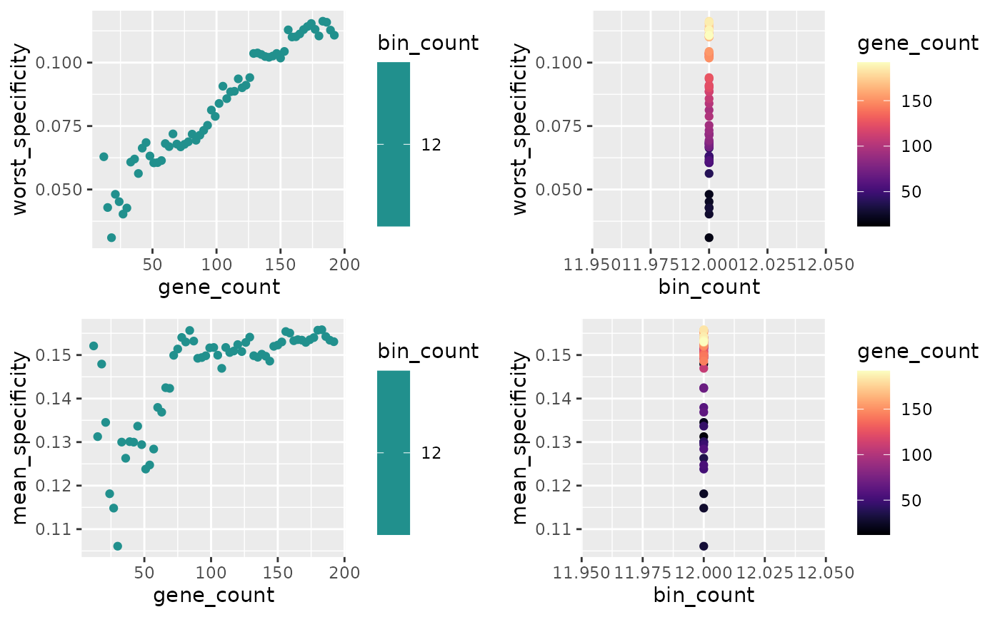
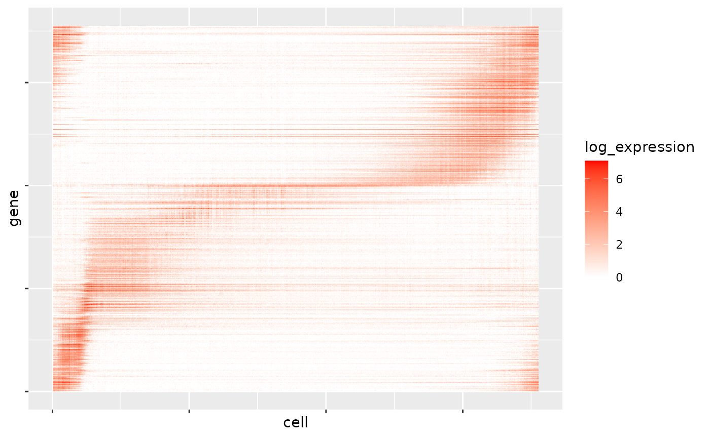
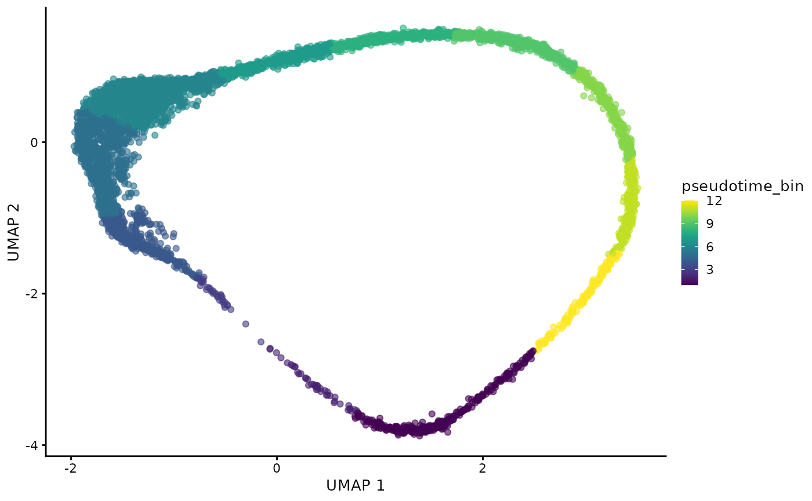
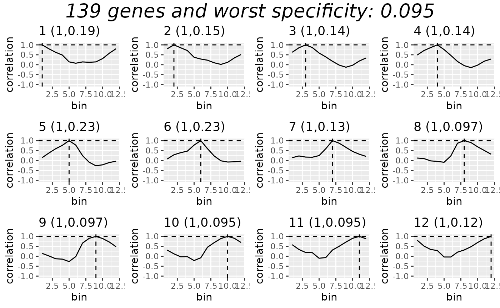

P. Falciparum Lifecycle - Comparing Bozdech and TradeSeq
falciparum_lifecycle.Rmd
library(readxl)
library(scran)
library(slingshot)
library(tradeSeq)
library(BiocParallel)
library(blase)
library(scater)
library(utils)
library(ami)
library(fs)
RNGversion("3.5.0")
#> Warning in RNGkind("Mersenne-Twister", "Inversion", "Rounding"): non-uniform
#> 'Rounding' sampler used
SEED = 7
set.seed(SEED)
N_CORES = 4
if (ami::using_ci()) {
N_CORES = 2
}In this article we will use BLASE to map Plasmodium falciparum microarray data of the asexual lifecycle (Painter et al. 2018, 3d7 strain) onto the Malaria Cell Atlas (Dogga et al. 2023, 7G8 & NF54 strains) to try and annotate it over a 48 hour period.
We will also investigate the Bozdech method for finding genes that change over the lifecycle, and compare it with TradeSeq’s results.
Load Data
root_dir = tools::R_user_dir("BLASE", "data")
article_dir = path(root_dir, "3d7_lifecycle")
if (!dir.exists(article_dir)) {
dir.create(article_dir, recursive = TRUE)
}
bulk_path = path(article_dir, "3d7_bulk_timepoints", ext="xlsx")
if (!file.exists(bulk_path)) {
download.file('https://static-content.springer.com/esm/art%3A10.1038%2Fs41467-018-04966-3/MediaObjects/41467_2018_4966_MOESM4_ESM.xlsx', bulk_path)
}else {
print("Using cached")
}
bulk = as.data.frame(read_excel(bulk_path, sheet = "Estimated Total Abundance"))
rownames(bulk) = bulk$`Gene ID`
rownames(bulk) = gsub(x=rownames(bulk), pattern="_", replacement="-", fixed=TRUE)
bulk = bulk[7:nrow(bulk),]
bulk = subset(bulk, , -c(`Gene ID`, `Annotation`, `Peak Time (hpi)`, `p-value`))Prepare SC
Here we use the Malaria Cell Atlas’s Plasmodium falciparum 10x data (with some preprocessing described in generate-MCA-pf-object.
data(processed_MCA_PF_SCE, package="blase")
gridExtra::grid.arrange(
plotPCA(processed_MCA_PF_SCE, colour_by="STAGE_LR"),
plotUMAP(processed_MCA_PF_SCE, colour_by="STAGE_LR"),
plotPCA(processed_MCA_PF_SCE, colour_by="DAY"),
plotUMAP(processed_MCA_PF_SCE, colour_by="DAY"),
plotPCA(processed_MCA_PF_SCE, colour_by="STRAIN"),
plotUMAP(processed_MCA_PF_SCE, colour_by="STRAIN"),
plotPCA(processed_MCA_PF_SCE, colour_by="slingPseudotime_1"),
plotUMAP(processed_MCA_PF_SCE, colour_by="slingPseudotime_1"),
ncol=2
)Get Genes
TradeSeq
associationTestResult <- associationTest(processed_MCA_PF_SCE, lineages=T, global=F, contrastType="consecutive")
genelist = blase::get_top_n_genes(associationTestResult, n_genes = 500, lineage = 1)
res = find_best_params(processed_MCA_PF_SCE,
genelist,
split_by="pseudotime_range",
pseudotime_slot="slingPseudotime_1",
bins_count_range = seq.int(10, 14, 1),
gene_count_range = seq.int(12, 192, 3))
plot_find_best_params_results(res)
res2 = find_best_params(processed_MCA_PF_SCE,
genelist,
split_by="pseudotime_range",
pseudotime_slot="slingPseudotime_1",
bins_count_range = 12,
gene_count_range = seq.int(12, 192, 3))
plot_find_best_params_results(res2)
Get Bozdech Genes
Bozdech’s paper describes using a fourier transform on the gene expression of cells ordered by time. This gives the amplitude and phase of the peak of waves. In this case we assume that many genes important for lifecycle development are turned on temporarily during the lifecycle, then turned off, resulting in a clear peak. They then find the top “power” genes by analysing how strong peaks are versus the average expression of the gene over pseudotime.
BLASE provides a convenience function to perform this analysis, and
also allows you to select the top genes by amplitude and explained
variance if preferred. See the documentation for
select_genes_by_fourier_method() for more information. It
is noteworthy that BLASE will force these genes to be selected to cover
a wide range of pseudotime by default, instead of simply the top power
genes.
waves = get_waves(processed_MCA_PF_SCE, "slingPseudotime_1", n_cores=N_CORES)
fourier_power_genes = select_genes_by_fourier_method(processed_MCA_PF_SCE, waves, n_groups=100, top_n_per_group=2)
#> Warning in .local(x, ...): Fewer genes identified as good matches than
#> requested. requested=200 found=139
head(fourier_power_genes)
#> amplitude phase k r2 gene total_expression
#> PF3D7-1035900 56.590720 0.06285167 1 0.06903311 PF3D7-1035900 180722.50
#> PF3D7-0203100 11.329514 0.03413750 1 0.09942970 PF3D7-0203100 42541.57
#> PF3D7-1035400 64.328026 0.19227314 1 0.06203592 PF3D7-1035400 208335.90
#> PF3D7-0613900 65.277368 0.19830967 1 0.06787626 PF3D7-0613900 204883.93
#> PF3D7-0507500 8.015728 0.25552105 1 0.03808634 PF3D7-0507500 30413.86
#> PF3D7-0210600 20.553304 0.24694346 1 0.06727891 PF3D7-0210600 69061.75
#> peak_expression cellcount_in_peak power
#> PF3D7-1035900 6061.8055 287 0.009335621
#> PF3D7-0203100 1322.9882 274 0.008563579
#> PF3D7-1035400 4213.9056 306 0.015265654
#> PF3D7-0613900 4585.9112 307 0.014234329
#> PF3D7-0507500 500.1799 325 0.016025689
#> PF3D7-0210600 1572.0944 325 0.013073836Compare Gene Lists
Here we generate a heatmap of log counts of the selected genes, ordered by pseudotime. Genes are ordered by their phase in pseudotime.
All Genes
gene_selection_matrix(processed_MCA_PF_SCE, waves, n_cores=N_CORES, target_matrix_size=nrow(waves))
TradeSeq Genes
gene_selection_matrix(processed_MCA_PF_SCE, waves, genes=genelist[0:300], n_cores=N_CORES, target_matrix_size=300)
Bozdech Genes
gene_selection_matrix(processed_MCA_PF_SCE, waves, genes=rownames(fourier_power_genes), n_cores=N_CORES, target_matrix_size=length(unique(rownames(fourier_power_genes))))Use each gene list
Using TradeSeq genes
Now we will use the genes generated by TradeSeq.
genes = 300
bins = 12
processed_MCA_PF_SCE = assign_pseudotime_bins(processed_MCA_PF_SCE, pseudotime_slot="slingPseudotime_1", n_bins=bins, split_by="pseudotime_range")
plotUMAP(processed_MCA_PF_SCE, color="pseudotime_bin")
gridExtra::grid.arrange(
plotUMAP(processed_MCA_PF_SCE, color="STAGE_LR"),
plotUMAP(processed_MCA_PF_SCE, color="pseudotime_bin"),
ncol=2
)
blaseData = as.BlaseData(processed_MCA_PF_SCE, pseudotime_slot="slingPseudotime_1", n_bins=bins, split_by="pseudotime_range")
blaseData@genes = genelist[1:genes]
evaluate_parameters(blaseData, make_plot = TRUE)#> [1] 0.1068000 0.1488833
## Map Bulk data onto Single Cell
mapping_results = c()
for (bulkname in colnames(bulk)) {
res = map_best_bin(blaseData, bulkname, bulk)
mapping_results = c(mapping_results, res)
}
blase::plot_mapping_result_heatmap(rev(mapping_results), annotate = TRUE)Using Bozdech Genes
And here we will use the genes generated by Bozdech’s Fourier method.
blaseData = as.BlaseData(processed_MCA_PF_SCE, pseudotime_slot="slingPseudotime_1", n_bins=bins, split_by="pseudotime_range")
blaseData@genes = rownames(fourier_power_genes)
evaluate_parameters(blaseData, make_plot = TRUE)
#> [1] 0.095400 0.141875
## Map Bulk data onto Single Cell
mapping_results_fourier = c()
for (bulkname in colnames(bulk)) {
res = map_best_bin(blaseData, bulkname, bulk)
mapping_results_fourier = c(mapping_results_fourier, res)
}
blase::plot_mapping_result_heatmap(rev(mapping_results_fourier), annotate = TRUE)Analysing Accuracy
The Bulk paper describes the following timepoints HPI matching to lifecycle stages, in figure 1:
5-15: Ring
15-34: Troph
34-40: Schizont
40-45: Merozoites
expected_rings_hpi = 5:15
expected_trophs_hpi = 16:34
expected_schizont_hpi = 35:42Below, we can see how out bins are aligned with lifecycle stages
table(processed_MCA_PF_SCE@colData[c("STAGE_LR", "pseudotime_bin")])
#> pseudotime_bin
#> STAGE_LR 1 2 3 4 5 6 7 8 9 10 11 12
#> gametocyte 0 0 0 0 0 0 0 0 0 0 0 0
#> ring 107 43 35 574 732 0 0 0 0 0 0 0
#> schizont 240 0 0 0 0 0 0 258 482 326 273 137
#> trophozoite 0 0 0 0 401 1670 512 210 0 0 0 0Now we can check the accuracy of these techniques, according to prior knowledge.
results_tradeseq = analyse_mapping_results(mapping_results)
results_fourier = analyse_mapping_results(mapping_results_fourier)
print(paste("Tradeseq:", describe_results(results_tradeseq)))
#> [1] "Tradeseq: 7 wrong out of 38, 1 confident calls wrong out of 13"
print(paste("Fourier:", describe_results(results_fourier)))
#> [1] "Fourier: 1 wrong out of 38, 0 confident calls wrong out of 16"Summary
We’ve shown here that using Bozdech’s method can give better mappings than using tradeseq in this case of the P. falciparum lifecycle. Selecting informative genes is vital for BLASE’s performance, however this is an non-trivial problem as of now - we reccomend that you select genes carefully and apply prior knowledge of genes that change over the trajectory where possible.
Session Info
sessionInfo()
#> R version 4.4.0 (2024-04-24)
#> Platform: x86_64-pc-linux-gnu
#> Running under: Ubuntu 22.04.4 LTS
#>
#> Matrix products: default
#> BLAS: /usr/lib/x86_64-linux-gnu/openblas-pthread/libblas.so.3
#> LAPACK: /usr/lib/x86_64-linux-gnu/openblas-pthread/libopenblasp-r0.3.20.so; LAPACK version 3.10.0
#>
#> Random number generation:
#> RNG: Mersenne-Twister
#> Normal: Inversion
#> Sample: Rounding
#>
#> locale:
#> [1] LC_CTYPE=C.UTF-8 LC_NUMERIC=C LC_TIME=C.UTF-8
#> [4] LC_COLLATE=C.UTF-8 LC_MONETARY=C.UTF-8 LC_MESSAGES=C.UTF-8
#> [7] LC_PAPER=C.UTF-8 LC_NAME=C LC_ADDRESS=C
#> [10] LC_TELEPHONE=C LC_MEASUREMENT=C.UTF-8 LC_IDENTIFICATION=C
#>
#> time zone: UTC
#> tzcode source: system (glibc)
#>
#> attached base packages:
#> [1] stats4 stats graphics grDevices utils datasets methods
#> [8] base
#>
#> other attached packages:
#> [1] fs_1.6.4 ami_0.1.0
#> [3] scater_1.32.0 ggplot2_3.5.1
#> [5] blase_0.0.0.9000 BiocParallel_1.38.0
#> [7] tradeSeq_1.18.0 slingshot_2.12.0
#> [9] TrajectoryUtils_1.12.0 princurve_2.1.6
#> [11] scran_1.32.0 scuttle_1.14.0
#> [13] SingleCellExperiment_1.26.0 SummarizedExperiment_1.34.0
#> [15] Biobase_2.64.0 GenomicRanges_1.56.0
#> [17] GenomeInfoDb_1.40.0 IRanges_2.38.0
#> [19] S4Vectors_0.42.0 BiocGenerics_0.50.0
#> [21] MatrixGenerics_1.16.0 matrixStats_1.3.0
#> [23] readxl_1.4.3
#>
#> loaded via a namespace (and not attached):
#> [1] pbapply_1.7-2 gridExtra_2.3
#> [3] rlang_1.1.3 magrittr_2.0.3
#> [5] compiler_4.4.0 mgcv_1.9-1
#> [7] DelayedMatrixStats_1.26.0 reshape2_1.4.4
#> [9] systemfonts_1.0.6 vctrs_0.6.5
#> [11] stringr_1.5.1 pkgconfig_2.0.3
#> [13] crayon_1.5.2 fastmap_1.1.1
#> [15] backports_1.4.1 XVector_0.44.0
#> [17] labeling_0.4.3 utf8_1.2.4
#> [19] rmarkdown_2.26 ggbeeswarm_0.7.2
#> [21] UCSC.utils_1.0.0 ragg_1.3.1
#> [23] purrr_1.0.2 xfun_0.43
#> [25] bluster_1.14.0 zlibbioc_1.50.0
#> [27] cachem_1.0.8 beachmat_2.20.0
#> [29] jsonlite_1.8.8 highr_0.10
#> [31] DelayedArray_0.30.1 irlba_2.3.5.1
#> [33] parallel_4.4.0 cluster_2.1.6
#> [35] R6_2.5.1 stringi_1.8.4
#> [37] bslib_0.7.0 RColorBrewer_1.1-3
#> [39] limma_3.60.0 jquerylib_0.1.4
#> [41] cellranger_1.1.0 Rcpp_1.0.12
#> [43] knitr_1.46 Matrix_1.7-0
#> [45] splines_4.4.0 igraph_2.0.3
#> [47] tidyselect_1.2.1 abind_1.4-5
#> [49] yaml_2.3.8 viridis_0.6.5
#> [51] codetools_0.2-20 plyr_1.8.9
#> [53] lattice_0.22-6 tibble_3.2.1
#> [55] withr_3.0.0 evaluate_0.23
#> [57] desc_1.4.3 pillar_1.9.0
#> [59] checkmate_2.3.1 generics_0.1.3
#> [61] metR_0.15.0 sparseMatrixStats_1.16.0
#> [63] munsell_0.5.1 scales_1.3.0
#> [65] glue_1.7.0 metapod_1.12.0
#> [67] tools_4.4.0 data.table_1.15.4
#> [69] BiocNeighbors_1.22.0 ScaledMatrix_1.12.0
#> [71] locfit_1.5-9.9 cowplot_1.1.3
#> [73] grid_4.4.0 edgeR_4.2.0
#> [75] colorspace_2.1-0 nlme_3.1-164
#> [77] GenomeInfoDbData_1.2.12 beeswarm_0.4.0
#> [79] BiocSingular_1.20.0 vipor_0.4.7
#> [81] cli_3.6.2 rsvd_1.0.5
#> [83] textshaping_0.3.7 fansi_1.0.6
#> [85] S4Arrays_1.4.0 viridisLite_0.4.2
#> [87] dplyr_1.1.4 gtable_0.3.5
#> [89] sass_0.4.9 digest_0.6.35
#> [91] ggrepel_0.9.5 SparseArray_1.4.3
#> [93] dqrng_0.3.2 farver_2.1.1
#> [95] htmlwidgets_1.6.4 memoise_2.0.1
#> [97] htmltools_0.5.8.1 pkgdown_2.0.9
#> [99] lifecycle_1.0.4 httr_1.4.7
#> [101] statmod_1.5.0